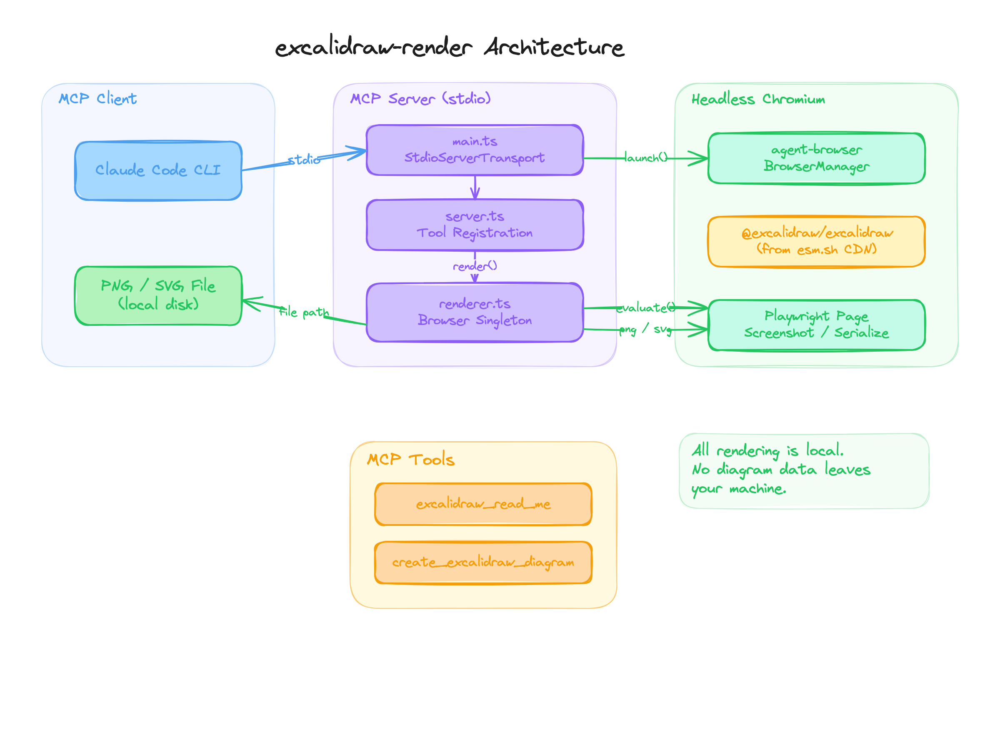

Local PNG/SVG rendering for Excalidraw diagrams through an MCP server, headless Chromium, and agent-friendly output paths.
The server exposes tools for reading the Excalidraw element format and rendering element JSON to PNG or SVG.
agent prompt
-> Excalidraw element JSON
-> headless Chromium singleton
-> @excalidraw/excalidraw import
-> exportToSvg()
-> SVG or Playwright PNG screenshot
claude mcp add --scope user --transport stdio excalidraw -- npx -y excalidraw-rendernpx -y excalidraw-renderFor source installs, clone the repository, install dependencies, build it, and point the MCP config at the built dist/index.js.
| Approach | Strength | Tradeoff |
|---|---|---|
| excalidraw-render | CLI-friendly PNG/SVG output, local rendering | No interactive browser UI |
| Excalidraw MCP app | Interactive desktop surface | More UI-oriented |
| Manual export | Human-friendly editing | Breaks automation loop |
Diagram content stays local. The renderer fetches the Excalidraw library at startup, then converts diagrams locally in headless Chromium.
.excalidraw files.